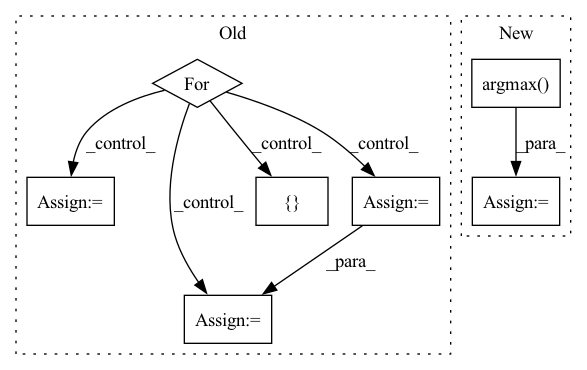

Pattern ID :15327

Before Change
self.model.eval()
all_predictions, all_labels = torch.Tensor(), torch.Tensor()
for features, labels in feature_labels_dataloader:
outputs = self.model(features)
_, predicted = torch.max(outputs, 1)
all_predictions = torch.cat([all_predictions, predicted])
all_labels = torch.cat([all_labels, labels])
predictions, test_labels = (all_predictions.detach().numpy(), all_labels.detach().numpy())
clf_report = classification_report(y_true=test_labels, y_pred=predictions, output_dict=True)
After Change
test_labels.tensors[0].cpu().detach().numpy(),
)
if predictions.shape[1] > 1:
predictions = np.argmax(predictions, axis=1)
clf_report = classification_report(
y_true=test_labels, y_pred=predictions, output_dict=True
)
In pattern: SUPERPATTERN
Frequency: 3
Non-data size: 7
Instances
Fragment ID: 52028121
Project Name: knodle/knodle
Commit Name: 7a3e00020cd32bd1e01fb57180c37a036739b7f7
Time: 2021-02-02
Author: alessandro.volpicella@gmail.com
File Name: knodle/trainer/trainer.py
M Class Name: Trainer
N Class Name: Trainer
M Method Name: test(3)
N Method Name: test(3)
M Parent Class: ABC
N Parent Class: ABC
M File Name: knodle/trainer/trainer.py
N File Name: knodle/trainer/trainer.py
M Start Line: 51
M End Line: 67
N Start Line: 59
N End Line: 70
'>
Before Change
micro, macro = micro_macro(data.test_node_class, pred)
accuracy = np.zeros(shape=data.n_a_type) // auprc, auroc, ap
for i in range(data.test_range.shape[0]):
[start, end] = data.test_range[i]
s = score[start: end]
t = torch.ones(size=s.shape)
accuracy[i] = acc(t, s)
return accuracy, micro, macro
After Change
model.eval()
score = model.mcip(z, data.test_node_idx)
pred = torch.argmax(score, dim=1)
micro, macro = micro_macro(data.test_node_class, pred)
return micro, macro
'>
Fragment ID: 52028088
Project Name: nyxflower/gripnet
Commit Name: 6a1abf4efb8aad81109d87bf4029c5b1bb830875
Time: 2020-04-17
Author: nyx0flower@gmail.com
File Name: grip-auta.py
M Class Name: AnonimousClass
N Class Name: AnonimousClass
M Method Name: test(1)
N Method Name: test(1)
M Parent Class:
N Parent Class:
M File Name: grip-auta.py
N File Name: grip-auta.py
M Start Line: 114
M End Line: 125
N Start Line: 109
N End Line: 114
'>
Before Change
micro, macro = micro_macro(data.train_node_class, pred)
accuracy = np.zeros(shape=data.n_a_type) // auprc, auroc, ap
for i in range(data.train_range.shape[0]):
[start, end] = data.train_range[i]
s = score[start: end]
t = torch.ones(size=s.shape)
accuracy[i] = acc(t, s)
out.train_record[epoch] = accuracy
out.train_out[epoch] = np.array([accuracy.mean(), micro, macro])
After Change
z = model.aa(z, data.aa_edge_idx, edge_weight=data.aa_edge_weight)
score = model.mcip(z, data.train_node_idx)
pred = torch.argmax(score, dim=1)
loss = -torch.log(score[range(score.shape[0]), data.train_node_class] + EPS).mean()
loss.backward()
optimizer.step()
'>
Fragment ID: 52028120
Project Name: nyxflower/gripnet
Commit Name: 6a1abf4efb8aad81109d87bf4029c5b1bb830875
Time: 2020-04-17
Author: nyx0flower@gmail.com
File Name: grip-auta.py
M Class Name: AnonimousClass
N Class Name: AnonimousClass
M Method Name: train(1)
N Method Name: train(1)
M Parent Class:
N Parent Class:
M File Name: grip-auta.py
N File Name: grip-auta.py
M Start Line: 87
M End Line: 106
N Start Line: 89
N End Line: 92
'>
Before Change
self.model.eval()
all_predictions, all_labels = torch.Tensor(), torch.Tensor()
for features, labels in feature_labels_dataloader:
outputs = self.model(features)
_, predicted = torch.max(outputs, 1)
all_predictions = torch.cat([all_predictions, predicted])
all_labels = torch.cat([all_labels, labels])
predictions, test_labels = (all_predictions.detach().numpy(), all_labels.detach().numpy())
clf_report = classification_report(y_true=test_labels, y_pred=predictions, output_dict=True)
After Change
test_labels.tensors[0].cpu().detach().numpy(),
)
if predictions.shape[1] > 1:
predictions = np.argmax(predictions, axis=1)
clf_report = classification_report(
y_true=test_labels, y_pred=predictions, output_dict=True
)
'>
Fragment ID: 52028090
Project Name: knodle/knodle
Commit Name: 7a3e00020cd32bd1e01fb57180c37a036739b7f7
Time: 2021-02-02
Author: alessandro.volpicella@gmail.com
File Name: knodle/trainer/trainer.py
M Class Name: Trainer
N Class Name: Trainer
M Method Name: test(3)
N Method Name: test(3)
M Parent Class: ABC
N Parent Class: ABC
M File Name: knodle/trainer/trainer.py
N File Name: knodle/trainer/trainer.py
M Start Line: 51
M End Line: 67
N Start Line: 59
N End Line: 70